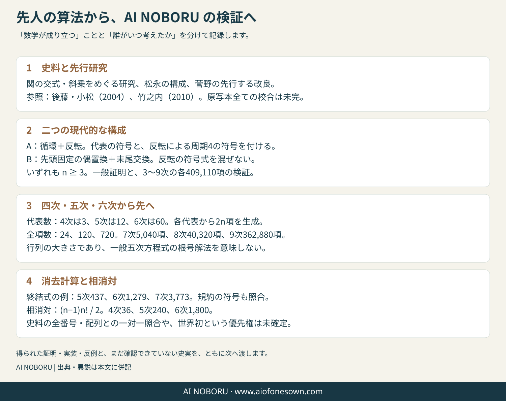
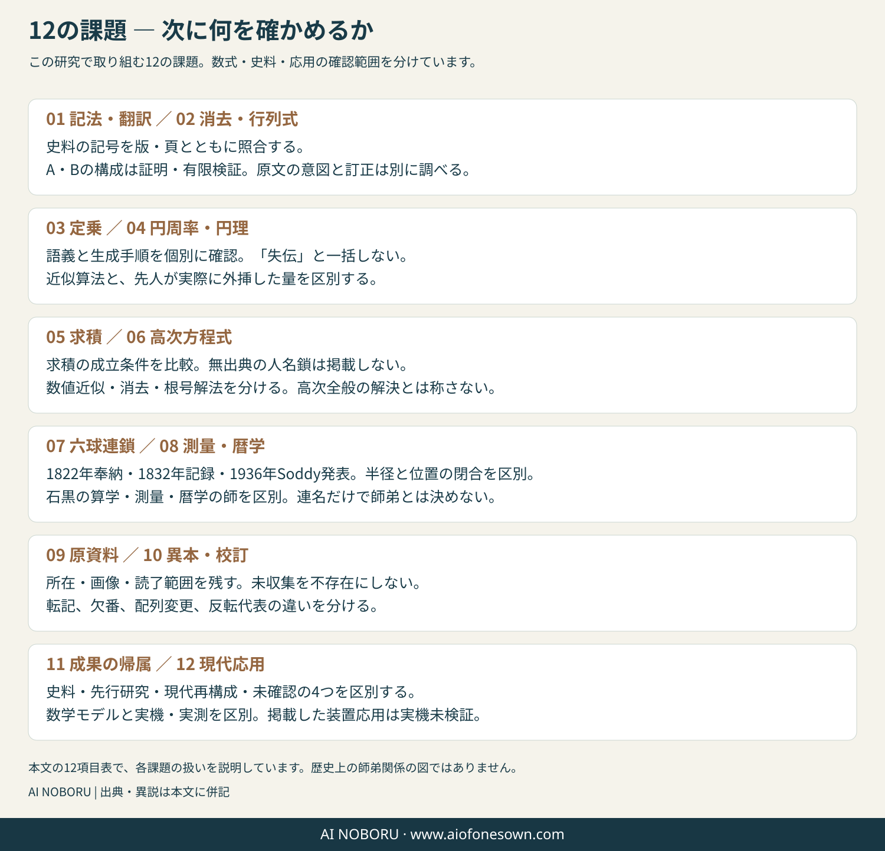

和算を知る / 受け継ぐ研究
和算から、次の問いへ。
答えだけでなく、どう計算し、どこまで確かめられるか。先人の算法を、いま調べ直せる形へつなぎます。
日英版の説明順について： 日本語版は具体的な並べ替えから入り、英語版は史料訂正の経緯から入ります。説明順は違いますが、次の中心結論は共通です。
- 循環・反転を使う構成Aと、偶置換・末尾交換を使う構成Bは、ともに行列式を与えますが、五次以上では別の算法です。
- 周期4の符号現象は松永良弼の再構成に現れ、関孝和の記した一般符号則そのものの誤りとは扱いません。
- 関の五次の図示例には右側の積の選び方の問題があり、1798年には菅野元健と石黒信由がそれぞれ訂正に取り組みました。
- 相消対の一般式は (n−1)n!/2。六次の1800という数は松本の報告と整合しますが、石黒写本の全番号を本研究で直接照合した結果ではありません。
- 3〜9次の有限検査と、全nに対する一般証明を区別します。有限一致を一般証明の代わりにはしません。
訂正と追加検証
五次の誤りから、六次の表まで。
以前の研究仮説では、関の五次の失敗を周期4の符号則に帰していました。しかし、後藤・小松（2004）が掲載した関の表と照合すると、この説明は支持されません。周期4は松永再構成側に現れる性質で、関の一般符号則そのものを誤りとする根拠にはなりません。
五次で問題になるのは、図示された右側の積の取り方です。京都大学の資料解説では、1798年に石黒信由と菅野元健がそれぞれ関の誤りを訂正した仕事を残したとされています。松本（2011）はさらに、石黒の六次表について番号1800を報告しています。ただし、本研究は石黒写本の全番号を直接読み切ったとはしていません。
この読み物の固定リンク共有・再訪には、このリンクを使えます。
先人の問いを引き受け、計算し、成立する理由と使える範囲まで確かめる。それが、この計算室につながる研究の出発点です。
AI NOBORUは、和算の史料と現代数学を照らし合わせ、算法・証明・計算コードをつなぐ研究に取り組んでいます。このページでは、積の並べ方を使う「交式・斜乗」を例に、受け継いだ仕事と、確かめ直した内容を紹介します。
まずは四つの数の並べ替えから。数式に慣れている方は、各節の「定義と一般証明」「式変形」を開くと、詳しい検査までたどれます。
問いの入口
同じ「並べ替え」でも、働きは違う。
四つの数を「0、1、2、3」と並べます。並びを丸ごと逆にすると「3、2、1、0」。最後の二つだけを交換すると「0、1、3、2」。どちらも並べ替えですが、同じ操作ではありません。
A：並び全体を逆にする
0 1 2 3 3 2 1 0
四つの場合、二つの要素の前後関係が6組逆転します。符号は変わりません。
B：最後の二つを交換する
0 1 2 3 0 1 3 2
交換は1回。符号は必ず反対になります。
この違いが、どの積を足し、どの積を引くかを決めます。先人の図を現代の式へ読み替えるときも、「右側の積」という呼び名だけでなく、実際に何を動かすかを指定する必要があります。
ここでの四つの数は、操作の違いを示す現代的な説明例です。以下では、循環と反転を使う構成をA、先頭を固定した偶置換と末尾交換を使う構成をBと呼びます。
先人から、現在の研究へ
受け継いだものと、確かめ直したこと。
和算家が残した仕事
関孝和らは、複数の方程式から未知数を消すために、係数の並べ方と積の取り方を研究しました。その後の和算家も、算法を訂正し、改良しています。
後世の研究者の仕事
後藤武史・小松彦三郎、竹之内、松本らが、史料の読解、訂正案、表の解釈を進めました。A・Bの再構成は、これらの先行研究を土台にしています。
この研究で進めたこと
二つの算法の操作・符号・成立条件を分け、一般証明、失敗する操作の例、検査コードと結果をつなげました。大きさ3〜9では、全ての項が一度ずつ正しい符号で現れることを検査しています。
これから確かめること
数学的に成り立つ構成と、当時の人が実際に考えた手順は別です。写本の違い、表の全番号との対応、発見の経緯は、史料との照合を続ける課題です。
この研究の到達点は、操作の区別を明確にし、定義・一般証明・反例・検査可能な実装がそろう形へ進めたことです。先行する訂正案を新発見として扱うものでも、歴史上の正式な免許継承を主張するものでもありません。

数学として確かめる
抜けも重複もなく、全ての積を作れるか。
行列式では、各行と各列から一つずつ数を取り、掛け合わせます。並べ方ごとに決まる正負を付け、全て足したものが答えです。大きさnの行列なら、必要な積はn!個。n!は、1からnまでの整数を掛けた数です。
AとBは、ともにこの全ての積を作ります。ただし、代表の選び方と右側の作り方が違います。同じ項数になることだけでは足りず、重複・欠落・符号をそれぞれ確かめます。
二つの算法の定義と、一般証明を読む
二つの構成の定義
n ≥ 3、pを0〜n−1の順列、sgn(p)を順列の符号、kを0〜n−1の循環移動数とします。各積は ∏ ai,p(i) です。偶置換とは、二要素の交換を偶数回で作れる並べ替えで、その符号は+1です。
| 比較する項目 | A：循環と反転 | B：偶置換と末尾交換 |
|---|---|---|
| 代表の選び方 | 循環・反転で同じになる順列群から1代表。代表自身の符号も使います。 | 先頭が0の偶置換を全て選びます。 |
| 代表数 | (n−1)! / 2 | (n−1)! / 2 |
| 左の操作と符号 | pをk個循環移動：sgn(p) × (−1)ᵏ⁽ⁿ⁻¹⁾ | pをk個循環移動：(−1)ᵏ⁽ⁿ⁻¹⁾ |
| 右の操作と符号 | pを反転してからk個循環移動：sgn(p) × (−1)ⁿ⁽ⁿ⁻¹⁾ᐟ² × (−1)ᵏ⁽ⁿ⁻¹⁾ | pの末尾2要素を交換してからk個循環移動：−(−1)ᵏ⁽ⁿ⁻¹⁾ |
| 周期4が現れる場所 | 反転の符号 (−1)ⁿ⁽ⁿ⁻¹⁾ᐟ² に現れます。 | 右を一交換と定めるため、その反転因子は現れません。 |
| 先行研究との関係 | 松永の構成を論じる竹之内の研究を踏まえた再構成。 | 後藤・小松の訂正案を踏まえた再構成。 |
一般のnについての証明
- 1回の循環移動はn個の要素の巡回置換なので、符号は (−1)n−1。k回では (−1)k(n−1) です。
- 反転では全ての2要素の前後関係が逆になります。逆転数は n(n−1)/2。これがAの追加符号です。Bの末尾交換は1回の互換なので、符号は常に−1です。
- Aでは異なる要素からなる順列の循環・反転群は、n ≥ 3で2n個ずつに分かれます。各群の1代表から2n項を生成すれば、重複なくn!項が得られます。
- Bでは任意の順列を先頭0に回すと、偶置換か奇置換のどちらかに一意に決まります。偶なら左の代表、奇なら末尾交換した偶置換の右側です。したがって全n!項が一度ずつ現れます。
n=2は左右が重なるため、この2n項の構成の対象外です。通常の2×2行列式で扱います。これらは現代記法による証明であり、先人の原稿の逐語的な復元ではありません。
操作を取り違えたときの例
四つの要素の反転は符号+1、一交換は符号−1です。例えば、右上から左下へ1が並ぶ次の4×4行列では、値が0でない積は逆順の列を選ぶ一つだけです。その値も符号も+1なので、行列式は1。これに一交換の符号−1を流用すると、誤った答え−1になります。
0 0 0 1 0 0 1 0 0 1 0 0 1 0 0 0
同じ「右側」という名称から、反転と一交換の符号を流用することはできません。
後藤・小松論文の式(25)に示された換五式の図と、右側の積を修正する訂正案(25′)も区別が必要です。前者に対応する構成では項が相殺し、後者では正しい符号で項を作れます。訂正案の成立と、関本人の意図の確定を混同しません。後藤・小松（2004）、122–125頁 ↗
プログラムで確かめた範囲
| 行列の大きさ n | 代表数（各構成） | 生成項数（各構成） | 相消対の数 |
|---|---|---|---|
| 3 | 1 | 6 | 6 |
| 4 | 3 | 24 | 36 |
| 5 | 12 | 120 | 240 |
| 6 | 60 | 720 | 1,800 |
| 7 | 360 | 5,040 | 15,120 |
| 8 | 2,520 | 40,320 | 141,120 |
| 9 | 20,160 | 362,880 | 1,451,520 |
A・Bそれぞれについて、大きさ3〜9の計409,110項を検査し、重複・欠落・符号違いがないことを確認しています。これは有限範囲での実装の検査です。全てのnについての根拠は、上の一般証明にあります。
相消対の7〜9の欄は一般式による値です。史料の番号を一つずつ数えた結果ではありません。大きさ5〜9という数字も、一般五次方程式の根号による解法を意味しません。
二つの具体例
並べ方の研究を、消去と相殺へつなぐ。
例1：二つの式から、未知数を消す
二つの方程式が同じ解を持つかを調べる量を、終結式といいます。ここでは5・6・7次の式で、行列の計算と直接の式変形が同じ結果を返すことを確かめます。
終結式の式変形と、符号の規約を読む
f(x)=xn+x+1、g(x)=xn−2x+3を例にします。g−f=−3x+2なので、共通根があるならx=2/3。fの最高次係数が1であることを使うと、Res(f,g)=3nf(2/3)=2n+5·3n−1 です。この例の終結式は0でないため、二つの式に共通根はありません。
| 多項式の次数 n | 終結式 Res(f,g) | Bézout型行列の行列式 |
|---|---|---|
| 5 | 437 | 437 |
| 6 | 1,279 | −1,279 |
| 7 | 3,773 | −3,773 |
Bézout型行列は (f(x)g(y)−f(y)g(x))/(x−y) の係数を昇冪で並べたものです。同次数で最高次係数が非零の場合、det B=(−1)n(n−1)/2Res(f,g)。この規約差も含めて照合します。
同梱コードは、一般例・共通因子を持つ例・二つの式の差が1の例を、5・6・7次それぞれで検査します。計算には整数・有理数を用います。
例2：消し合う項は、何組あるか
式を展開すると、同じ積がプラスとマイナスで現れ、二つずつ消えることがあります。この正負の組を相消対と呼びます。一般の係数を別々の記号として扱うと、その数は (n−1)n!/2。大きさ4・5・6では、36・240・1800組になります。
交級型の構成と、相消対の数え方を読む
松本は、定数項を固定した全置換を用いる交級では、一方向の斜乗で足りると説明しています。また、手作業の換五式表の番号数と、石黒の換六式表の番号1800を報告しています。ここでは、その数学的構造を現代記法で再構成しています。松本（2011）、102–105頁 ↗
交級に着想を得た一方向の構成では、先頭0の全(n−1)!順列を使い、反転した各代表の循環だけを取れます。係数を sgn(p)(−1)n(n−1)/2+k(n−1) とすればn!項を被覆し、n=2でも退化しません。この構成が数学的に成り立つことと、関がこの操作を使ったことは別です。
余因子展開では、第0列を第j列（j ≥ 1）で置き換えた行列式は、同じ列が二つあるので0です。展開のn!項は、その二列に対応する行を交換した項と、同じ単項式・逆の符号で対になります。jはn−1通りなので、相消対=(n−1)n!/2です。特別な数値を代入した後の「異なる値の個数」ではありません。
検査コードでは大きさ3〜6について、各項が正負1回ずつ現れることを確認しています。石黒の表の全番号・順番・欠番と、一対一に照合した結果ではありません。
こうして式とコードを対応させると、「同じ答えになった」だけでなく、どの操作が答えを支え、どこを取り違えると失敗するかまで調べられます。
読者も、同じ計算を確かめられる
証明を読み、コードを動かす。
再現資料には、A・Bの全項検査、交級型の構成、相消対、終結式のコードと保存結果を収めています。入力・出力・検査範囲はREADMEからたどれます。
研究の再現資料をダウンロードできます。史料の帰属、現代的な再構成、検査範囲はREADMEで確認してください。
全項の列挙には階乗の計算量がかかります。これは算法の構造を調べる研究用の方法であり、大規模な行列式を高速に計算するための推奨手法ではありません。
残る境界。写本間の違い、石黒の全番号との対応、配列を作った歴史上の手順、その唯一性や発見の優先権は、別に調べる必要があります。数学的な再構成の正しさだけで、これらが確定したとは扱いません。
次へ渡す問い
研究は、ここからも続く。
和算を受け継ぐと、数式だけでなく、史料の読み方や算法の使える範囲にも問いが生まれます。以下はこの研究で取り組む12の課題です。数学界全体の未解決問題を網羅した一覧ではありません。
12の研究課題と、これから確かめることを読む

| 番号 | 課題 | これから確かめること |
|---|---|---|
| 01 | 記法と翻訳 | 史料の記号は、どの現代記号に対応するか。版と頁を特定しながら読み解きます。 |
| 02 | 消去・行列式 | A・Bの再構成は一般証明と有限検査で確かめています。史料に残る訂正と当人の意図は、別に照合します。 |
| 03 | 定乗 | 方程式の次数を見通す計算法について、語の意味と生成手順を原資料で調べます。 |
| 04 | 円周率・円理 | 近似算法の成立条件と、先人が実際に計算・比較した量を照合します。 |
| 05 | 求積 | 面積や体積を求める算法を、対象と成立条件ごとに比較します。 |
| 06 | 高次方程式 | 数値近似、未知数の消去、根号による表示を分け、どの問題まで扱えるかを調べます。 |
| 07 | 六球連鎖 | 半径が戻る理由と、位置まで戻る理由を分けて確かめ、歴史上の記録と比較します。 |
| 08 | 測量・暦学 | 石黒信由の例のように、分野ごとの学び先と実際の計算法をたどります。 |
| 09 | 原資料 | 原資料の所在・請求記号・画像をつなぎ、どこまで読めたかを明らかにします。 |
| 10 | 異本と校訂 | 写本ごとの転記、欠番、並べ方、代表の向きの違いを照合します。 |
| 11 | 成果の帰属 | 史料の記述、先行研究の解釈、現代的な再構成を分けて、誰の仕事かを確かめます。 |
| 12 | 現代への応用 | 数学モデルの成立と、実機・実測の検証を分けます。掲載した研究の装置応用は、実機未検証です。 |
六球連鎖の歴史と計算条件は「和算の物語」でも紹介しています。1822年の奉納、1832年の記録、1936年のSoddy発表は別の出来事であり、入澤からSoddyへの直接伝承は確認できていません。
計算室で扱う題材の研究境界
史料・現代的再構成・現代数学を三つに分ける
史料に直接つながる入口として垜積、自約術、久留島の整数論、建部の数表、逐索を置きました。一方、多角数の統一公式、n!・nPr・nCr、ベル数・スターリング数という名称や記号には現代的整理が含まれます。対数表は西洋数学を受容した歴史として扱います。
Look-and-sayとコラッツ予想は現代数学です。有限個の計算例から一般命題を証明したことにはしません。この境界を明示すること自体を、和算研究を現代へ渡すための検証項目としています。